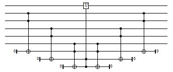
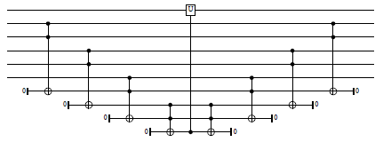

| Safe Haskell | None |
|---|
Quipper.Libraries.Decompose.Legacy
Description
Functions to decompose circuits into various gate bases. This
decompositions are "legacy". The GB_Toffoli and GB_CliffordT
decomposers contained here are being superseded by their
counterparts in Quipper.Libraries.Decompose.CliffordT.
Synopsis
- data LegacyGateBase
- with_combined_controls_gb :: LegacyGateBase -> Int -> [Signed Endpoint] -> ([Signed Qubit] -> Circ a) -> Circ a
- decomposeQToffoli :: LegacyGateBase -> Qubit -> (Signed Qubit, Signed Qubit) -> Circ ()
- decomposeQToffoli_inv :: LegacyGateBase -> Qubit -> (Signed Qubit, Signed Qubit) -> Circ ()
- decomposeQMultinot :: [Qubit] -> Circ ()
- decompose_transformer :: LegacyGateBase -> Transformer Circ Qubit Bit
- open_subroutine :: TypedSubroutine -> [Endpoint] -> Circ [Endpoint]
- decompose_subroutine :: LegacyGateBase -> BoxId -> TypedSubroutine -> Circ ()
- decompose_dynamic_transformer :: LegacyGateBase -> DynamicTransformer Circ Qubit Bit
- decompose_legacy_unary :: (QCData qa, QCData qb) => LegacyGateBase -> (qa -> Circ qb) -> qa -> Circ qb
- decompose_legacy_generic :: (QCData qa, QCData qb, QCurry qfun qa qb) => LegacyGateBase -> qfun -> qfun
Legacy gatebase
data LegacyGateBase Source #
An enumeration type for the three gate bases handled by this module.
Constructors
| GB_Toffoli | |
| GB_Binary | |
| GB_CliffordT |
Instances
| Show LegacyGateBase # | |
Defined in Quipper.Libraries.Decompose.Legacy Methods showsPrec :: Int -> LegacyGateBase -> ShowS # show :: LegacyGateBase -> String # showList :: [LegacyGateBase] -> ShowS # | |
Helper functions
with_combined_controls_gb :: LegacyGateBase -> Int -> [Signed Endpoint] -> ([Signed Qubit] -> Circ a) -> Circ a Source #
Decompose quantum controls recursively until at most n remain, and then pass these reduced controls to the given circuit. Precondition: n ≥ 1. The decomposition is done using Toffoli gates, decomposed into the gate base. Classical controls are left untouched.
For example, when n=2, this typically yields a circuit such as
the following (but with the Toffoli gates further decomposed into
the LegacyGateBase):

And for n=1, the circuit typically looks like this:

decomposeQToffoli :: LegacyGateBase -> Qubit -> (Signed Qubit, Signed Qubit) -> Circ () Source #
Decompose a Toffoli gate into the given LegacyGateBase. The controls
on the Toffoli gate may be positive or negative, as specified.
decomposeQToffoli_inv :: LegacyGateBase -> Qubit -> (Signed Qubit, Signed Qubit) -> Circ () Source #
The inverse of decomposeQToffoli.
decomposeQMultinot :: [Qubit] -> Circ () Source #
Implement a QMultinot gate in terms of QNot gates.
Decomposition transformers
decompose_transformer :: LegacyGateBase -> Transformer Circ Qubit Bit Source #
A transformer to decompose a circuit into LegacyGateBase gates. Note
that in the case of classically-controlled quantum gates, the
classical controls are unaffected.
open_subroutine :: TypedSubroutine -> [Endpoint] -> Circ [Endpoint] Source #
Return a circuit producing function from a TypedSubroutine
decompose_subroutine :: LegacyGateBase -> BoxId -> TypedSubroutine -> Circ () Source #
Apply the decompose transformer to the given TypedSubroutine Note: by default, set the classical-control flag to false.
decompose_dynamic_transformer :: LegacyGateBase -> DynamicTransformer Circ Qubit Bit Source #
A dynamic transformer variant of the decompose transformer
Generic decomposition
decompose_legacy_unary :: (QCData qa, QCData qb) => LegacyGateBase -> (qa -> Circ qb) -> qa -> Circ qb Source #
Decompose a circuit into gates from the given LegacyGateBase.
decompose_legacy_generic :: (QCData qa, QCData qb, QCurry qfun qa qb) => LegacyGateBase -> qfun -> qfun Source #
Decompose a circuit into gates from the given LegacyGateBase. Unlike
decompose_legacy_unary, this can be applied to a circuit-generating
function in curried form with n arguments, for any n ≥ 0.
The type of this heavily overloaded function is difficult to read. In more readable form, it has all of the following types:
decompose_legacy_generic :: (QCData qa) => LegacyGateBase -> Circ qa -> Circ qa decompose_legacy_generic :: (QCData qa, QCData qb) => LegacyGateBase -> (qa -> Circ qb) -> (qa -> Circ qb) decompose_legacy_generic :: (QCData qa, QCData qb, QCData qc) => LegacyGateBase -> (qa -> qb -> Circ qc) -> (qa -> qb -> Circ qc)
and so forth.